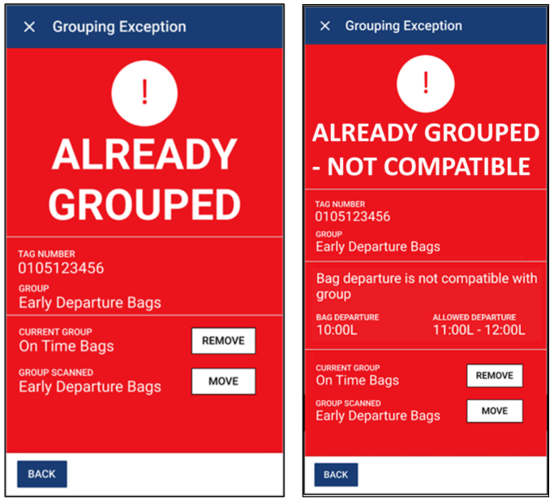
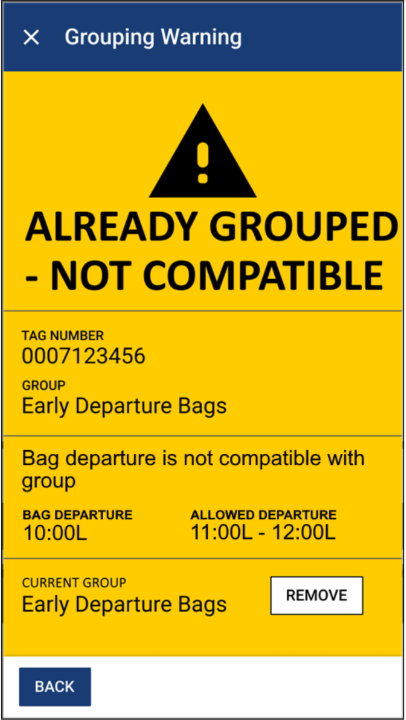

Wesley Renaud wrenaud@uoguelph.ca
Work Sample
Grouping in SmartSuite lets users create groups of bags that satisfy shared rules. For example, a group can be limited to active bags, bags terminating at a specific airport through the Final Destination rule, dry ice bags, or other rule combinations. Operators can then work with those groups as a unit rather than handling every bag individually.
The grouping recovery actions feature for British Airways was also split across several teams. My portion consisted of a handful of smaller, mostly unrelated changes spanning the API, mobile client, and web client.
One of the more visible mobile changes was updating the Already Grouped exception shown when a bag is scanned into a group while it already belongs to another group. I extended that exception so it could include incompatibility reasons when the bag is incompatible with the group it is currently in, rather than only with the group it is being scanned into.
That change made the recovery decision clearer for operators. Instead of only seeing that a bag was already grouped, they could also see why the current grouping was not a good fit and choose whether to remove or move the bag.

I also added a warning for scanning a bag into a group that it is already in when the bag is incompatible with that group. This covered a different recovery path from the cross-group Already Grouped exception: the bag does not need to be moved between groups, but the operator still needs a clear signal that the current grouping is invalid and a way to remove it.

Beyond the exception and warning screens, the bag-tag query fallback and Final Destination web configuration were the other main pieces I owned. Together they improved both the operator recovery experience and the reliability of finding the right bag during grouping scans.